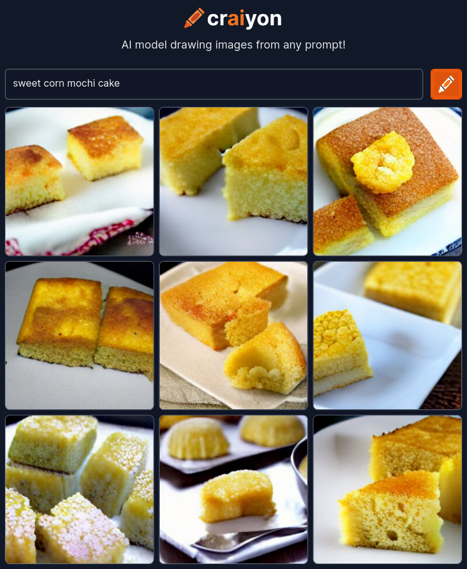

Sweet Corn Mochi Cake

Description
During corn season, you have to try these delicious sweet corn mochi cakes!
Ingredients
- Fresch Corn (2-3 cobs)
- Coconut milk or cream
- Glutinous Rice Flour
- Eggs
- Sugar
- Butter
Vanilla
- Salt
- Baking Powder
Directions
- Preheat oven to 350 degrees F. Grease a baknig pan with butter.
- Place corn kernels and coconut milk in a high-speed blender. Blend until very smooth.
Place remaining ingredients and blend again until smooth.
- Then, in a medium bowl, whisk the “corn milk” with melted butter, sugar, eggs and vanilla until smooth.
In a separate large bowl, whisk glutinous rice flour, baking powder and salt. Pour wet ingredients into dry ingredients.
Whisk until very smooth and no streaks of white remain.
There is no gluten in “glutinous rice flour” so you don't need to worry about over-mixing this batter.
- Pour batter into greased baking pan. Give the pana few hard taps on the counter to knock out air bubbles.
Bake for about 60 minutes, or until center is set but bounces back when pushed, and edges are golden brown.
- Set pan on a wire rack to cool fully to room temperature. If you can't wait until it cools to room temperature,
the mochi cake will be more custardy and gooey bu tnot yet its maximum chewiness.
Store in an air-tight container at room temperature up to one day or in the fridge for longer periods.